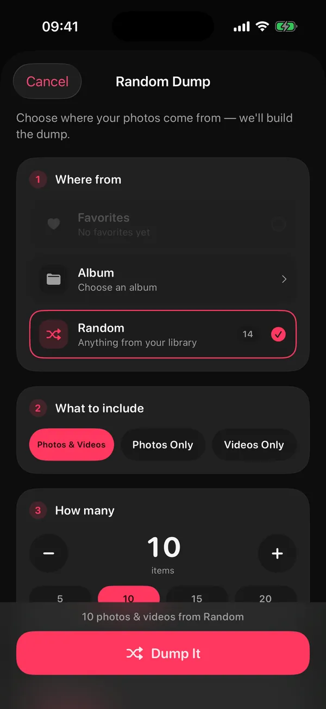
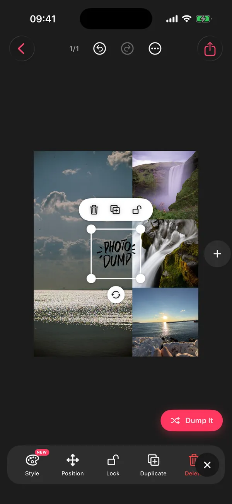
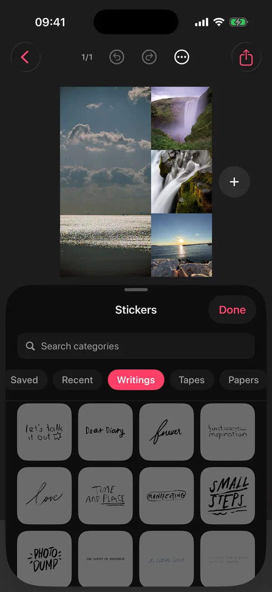

Fotoğrafları o seçer
Akıllı Dump; bu hafta sonundan, geçen aydan ya da kendi bulduğu bir geziden net ve çeşitli kareleri seçer.
Galeride binlerce fotoğraf var ama paylaşılan yok mu? DUMP galerini iPhone'unda tarar, bulanık kareleri ve seri çekim tekrarlarını eler, kaydırmalı postunu her şey nasıl yaşandıysa o sırayla hazırlar. Beğenmediğini değiştir, sonra hepsini orijinal kalitede, paylaşım sırasıyla yeni bir Fotoğraflar albümüne kaydet.
Hafta sonu dump'ları, tatiller, aylık özetler ve seçmekle uğraşmak yerine paylaşmak isteyen herkes için.
 Bilgisayarda mısın?iPhone kameranla tara
Bilgisayarda mısın?iPhone kameranla tara
Ücretsiz Hesap gerekmez iPhone ve iPad iOS 18.6+ Uygulama Türkçe İsteğe bağlı Premium (fiyatı App Store'da) Bağımsız geliştirici Gül Eda Aydemir'den


Ayda yüzlerce fotoğraf çekip neredeyse hiçbirini paylaşmıyorsan, sebebi çoğu zaman seçmenin yaşamaktan uzun sürmesidir. Sıkıcı kısmı DUMP yapar; güzel anlar da galeride kaybolmaz. İster Instagram'a koy, ister sadece aile grubuna at.
Akıllı Dump; bu hafta sonundan, geçen aydan ya da kendi bulduğu bir geziden net ve çeşitli kareleri seçer.
Haftalık taslağı açarsan her pazar “Haftan” hazır bekler. Sen sadece bakar ve paylaşırsın.
Orijinallerin paylaşım sırasıyla yeni bir albüme girer. Instagram'da albümü seç, kareleri işaretle, paylaş.
Uygulamanın gerçek ekranları, maket yok. Görüntüler İngilizce arayüzden; iPhone'un Türkçeyse DUMP Türkçe açılır, dili Ayarlar → Dil'den de seçebilirsin.

Favoriler, tek bir albüm ya da tüm galerin. Fotoğraf, video ya da ikisi birden; kaç kare olacağını da sen seç (ücretsiz 10'a, Premium ile 20'ye kadar). Sıralama adımında Akıllı Dump'ı seçersen en iyi kareleri DUMP bulur.

Herhangi bir kareyi elle ya da rastgele değiştir, karıştır, sürükleyip sırala, ekle ya da çıkar. Sonra takipçilerin nasıl kaydıracaksa öyle önizle.

DUMP, projenin adını taşıyan yeni bir albüm açar ve kareleri paylaşım sırasıyla ekler. Swipe Carousel'de orijinallerine dokunulmaz; kolaj sayfaları 2160 piksel olarak işlenir.
İlk elemeyi yapan bir seçici ve “tasarlanmış dursun” dediğin günler için bir stüdyo.
Postları geciktiren şey seçim. Akıllı Dump'ı aç; DUMP seçtiğin andan en fazla 180 fotoğrafa iPhone'unun içinde bakar:
Hangi andan
Akıllı Dump'ın sunduğu anlar, uygulamadaki adlarıyla. Geziler, fotoğraflarına kaydedilmiş konum bilgisinden (en az iki gün, evden en az 75 km) iPhone'unda otomatik bulunur. DUMP anlık konumunu hiç istemez ve yüzleri tanımaz; dump'ı dengelemek için yalnızca sayar.
Ayarlar'dan hatırlatmaları ve Haftalık dump taslağı'nı açarsan DUMP her pazar akşamı haftanı taslak olarak hazırlar: son 7 günün en iyi kareleri, en iyisi kapakta, diğerleri çektiğin sırayla. Kontrol et, istediğini değiştir ve paylaş; ya da sadece haftanın küçük bir albümü olarak sakla.
Onun yerine küçük bir hatırlatma mı istersin? İsteğe bağlı hatırlatmalar haftada yaklaşık iki kez ya da her gün gelir, yalnızca seçtiğin saatler içinde.
Pazar bildirimi, uygulamadaki haliyle
DUMP son 7 günün en iyi karelerini seçti. Taslağını görmek için dokun.
iPhone'unda planlanır. Sunucu yok, hesap yok.
Düz bir karusel yetmediğinde Kolaj Sayfası'na geç ve kafandakini birebir kur.



Hazır bir düzenle başla (hikâyeler, yaz, doğum günü, film, ızgaralar ve dahası), sonra Dump'la'ya dokun. DUMP boş hücreleri galerindeki fotoğraflarla doldurur ya da içine sinene kadar hepsini yeniden dump'lar. Her değişikliği geri alabilirsin.
Sevdiğin şablonları yer imine ekle; Kaydedilen Şablonlar'da seni bekler.

Bir ruh hali seç (Yumuşak Dump, Eğlenceli Dump, Seyahat Dump, Aylık Özet, Influencer ya da Minimal) ve elle yazılmış bir başlık satırını kopyala (uygulamada “başlık”, Instagram'da gönderinin “açıklama” kutusuna yazdığın metin): “pasaport dolu, kamera rulosu daha dolu” gibi. Yapay zekâ değil, fotoğraflarını da okumaz; sadece boş açıklama kutusunun karşısında donup kalmanı önler.
Reels mi istiyorsun? Dump'ın tamamını 10 ile 30 saniye arası tek bir kaydırma videosu olarak dışa aktar.

DUMP: Carousel & Collage, bağımsız geliştirici Gül Eda Aydemir'in iPhone ve iPad için ücretsiz uygulaması. Galerini Instagram photo dump'larına, kaydırmalı postlara, kolajlara ve ızgaralara çevirir; kareleri cihazında seçer ve orijinalleri paylaşım sırasıyla yeni bir Fotoğraflar albümüne kaydeder.
App Store sayfası ve uygulamanın kendisiyle 15 Ekim 2026'da karşılaştırıldı.
Yakında, 2.0'da henüz yok: Anılar (Geçmişte bugün, Aylık özet ve Yılın özeti), uygulama içi kamera ve daha fazla dil. Çıktıklarında bu sayfada yazacak.
Photo dump, bir hafta sonundan, bir geziden ya da koca bir aydan seçilmiş fotoğraf ve kısa videoların tek bir kaydırmalı postta (karuselde) paylaşılmasıdır. Tek bir kusursuz kare yerine anın tamamını anlatır; biraz dağınıklık, bulanık bir kahkaha ya da bir fiş fotoğrafı da işin tadıdır. Türkçede “dump” ya da “dumpluk fotoğraf” diye de geçer.
Kısa bir zaman aralığı seç (geçen hafta sonu, geçen ay ya da bir gezi), bulanık ve tekrar eden kareleri ele, en güçlü fotoğrafını kapak yap, kalanını yaşandığı sırayla diz ve 8–12 karede bırak. İnsan, mekân ve detay karelerini karıştırmak dump'ı canlı tutar. Kurallar, 10 karelik sıralama ve kontrol listesi photo dump rehberinde.
Evet. DUMP'ın Akıllı Dump özelliği seçtiğin andan en fazla 180 fotoğrafa iPhone'unda bakar; bulanık kareleri eler, her seri çekimden yalnızca en netini tutar, insan, mekân ve detayları harmanlar ve her şeyi çektiğin sırayla dizer. Beğenmediğini değiştirirsin. Seçim Apple'ın Vision teknolojisiyle cihazında yapılır; hiçbir şey yüklenmez.
Instagram tek karusele 20 fotoğraf ve video koymana izin veriyor ama çoğu zaman en iyisi 8–12 kare: hikâyeyi anlatmaya yeter, insanlar da sonuna kadar kaydırır. Ücretsiz planda Rastgele Dump, Akıllı Dump ve Pazar taslağı en fazla 10 öğe hazırlar; Premium ile bu sayı 20'ye çıkar.
Evet. Ayarlar'dan hatırlatmaları ve Haftalık dump taslağı'nı açarsan DUMP her pazar akşamı, izin verdiğin saatler içinde bir bildirim gönderir. Dokununca “Haftan” açılır: son 7 günün en iyi kareleri, en iyisi kapakta, diğerleri çektiğin sırayla. Kontrol et, istediğini değiştir, kaydet. Bildirim iPhone'unda planlanır; arada bir sunucu yok.
Hayır. Hesap yok, sunucu yok. App Store gizlilik etiketine göre DUMP veri toplamıyor, uygulamada üçüncü taraf SDK yok ve bir dump'ı baştan sona uçak modunda hazırlayıp kaydedebilirsin. DUMP'ın kendi başlattığı tek ağ trafiği, Premium'u kontrol ederken ya da satın alırken Apple'ın ödeme sistemi (StoreKit). iCloud Fotoğrafları'nda “iPhone Saklama Alanını Optimize Et” açıksa, DUMP bir fotoğrafı gösterirken ya da kaydederken iOS senin tam boyutlu orijinalini iCloud'dan indirebilir; bu aktarım cihazınla iCloud hesabın arasındadır. Fotoğraf analizi, gezi algılama için fotoğraflarındaki konum bilgisi dahil, tamamen cihazında yapılır; DUMP anlık konumunu hiç istemez.
Swipe Carousel modunda hayır. DUMP orijinal fotoğraf ve videolarını yeni bir albüme senin sıranla ekler: yeniden sıkıştırma, yeniden boyutlandırma ya da kopya yok. Tek istisna tarih damgası eklediğin fotoğraflar; onlar yüksek kaliteli JPEG olarak yeniden işlenir. Kolaj, ızgara ve şablon sayfaları uzun kenarda 2160 piksel, %98 kaliteli JPEG olarak kaydedilir (video içeren sayfalar MP4). Instagram yüklerken yine sıkıştırır; böylece bu yalnızca bir kez olur.
Kaydettikten sonra Instagram'da paylaş'a dokun. DUMP açıklamanı kopyalar; kareler zaten paylaşım sırasıyla yeni bir albümde. Instagram'da yeni gönderi başlat, o albümü seç, çoklu seçimi aç, kareleri sırasıyla işaretle ve açıklamayı yapıştır. Instagram karusel paylaşımını yalnızca profesyonel hesaplar için onaylı planlama araçlarına API üzerinden açıyor; DUMP'ın hesabı ya da sunucusu olmadığı için son dokunuş senin. Ölçüler ve kalite için kaydırmalı post rehberine bak.
DUMP'ı indirmek ve kullanmak ücretsiz; reklam yok, görsellerine filigran eklenmez. Ücretsiz planda Rastgele Dump, Akıllı Dump ve Pazar taslağı en fazla 10 öğe hazırlar (Premium ile 20) ve 5 proje saklanır. DUMP Premium isteğe bağlı, otomatik yenilenen bir abonelik: haftalık ya da yıllık plan; güncel fiyatı App Store'da gör. Ayarlar → [adın] → Abonelikler'den istediğin zaman iptal edebilirsin.
Evet, ikisi de. DUMP iPhone ve iPad için evrensel bir uygulama ve iOS ya da iPadOS 18.6 veya üzerini ister. Güncel sürüm Türkçe, İngilizce, İspanyolca ve Japonca; dili uygulamanın içinden, Ayarlar → Dil bölümünden değiştirebilirsin. Android ya da web sürümü yok.
Hayır. Başlık Oluşturucu (Premium) sana altı ruh halinde elle yazılmış başlık satırları sunar: Yumuşak Dump, Eğlenceli Dump, Seyahat Dump, Aylık Özet, Influencer ve Minimal. Ruh halini sen seçersin; fotoğraflarına bakmaz. Ücretsiz planda DUMP'tan kopyaladığın metnin sonuna “#DumpApp ile DUMPlandı 📸” gibi küçük bir DUMP etiketi eklenir; Premium'da bunu kapatabilirsin.
DUMP'ı tek bir kişi geliştiriyor ve destekliyor: Gül Eda Aydemir. Geliştirici hakkında
App Store etiketi: veri toplanmıyor. Hesap yok, üçüncü taraf SDK yok. Uçak modunda dene. Gizlilik politikası (İngilizce)
solostaseraofficial@gmail.com adresine Türkçe yaz. Yanıt genelde iki iş günü içinde gelir.
Reklam yok, görsellerde filigran yok. Premium isteğe bağlı; haftalık ya da yıllık, istediğin zaman iptal.
Seçim, sıralama, ölçüler ve birleşik post: DUMP'ı geliştiren Gül Eda'nın kaleminden, adım adım.
Hangi fotoğraflar seçilmeli, kaç kare olmalı, nasıl sıralanmalı: 6 kural ve 10 karelik sıra.
9 dk okuma Instagram20 kare sınırı, 4:5 ve 3:4 ölçüleri, doğru sıra, kalite ve paylaştıktan sonra düzenleme.
7 dk okuma Birleşik postTek fotoğrafı slaytlara dikişsiz bölmenin ölçüleri, kuralları ve sık hataları.
6 dk okuma
Galerin ekran görüntüleri ve ıskalanmış karelerle mi dolu? Aynı geliştiricinin uygulaması Solo.Swipe ile günde 5 dakikalık seanslarda kaydırarak temizle. Geriye kalanları DUMP bir posta çevirsin.
Seçmeyi DUMP'a bırak. Paylaşmak sana kalsın.
Bilgisayarda mısın?iPhone kameranla tara
Ücretsiz · Hesap yok · iPhone ve iPad · iOS 18.6+ · Türkçe, English, Español, 日本語